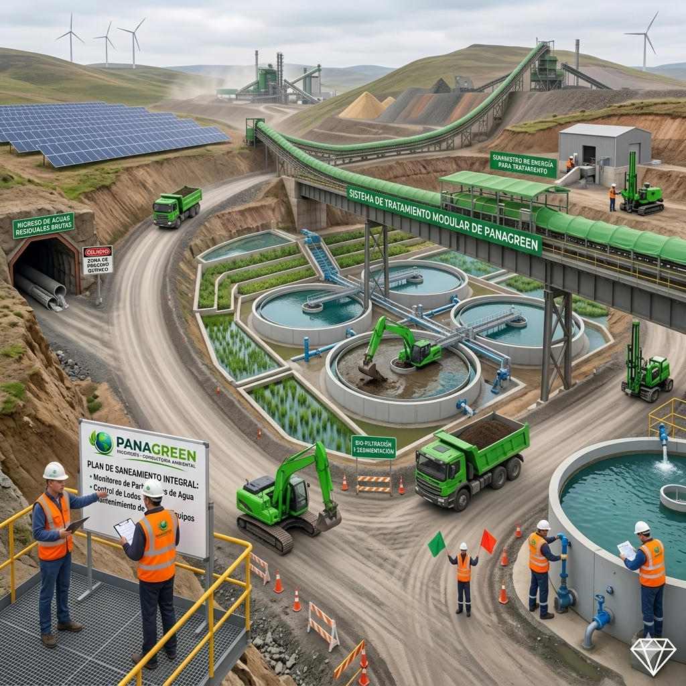
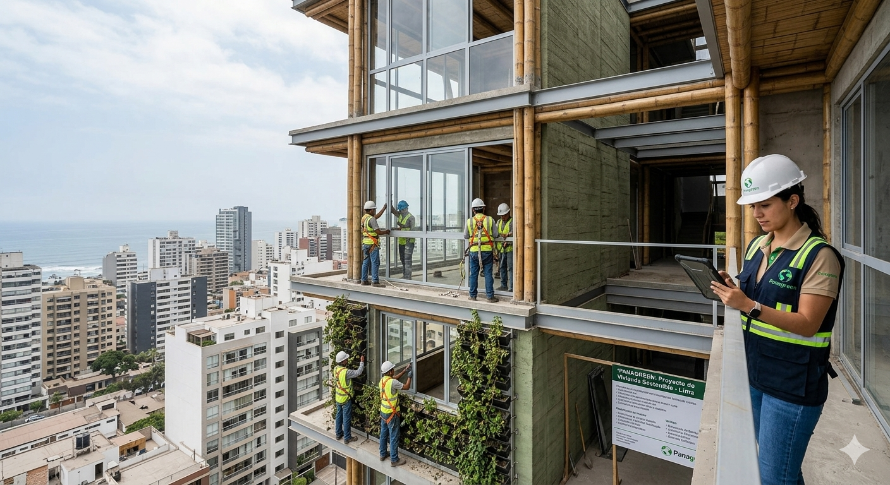
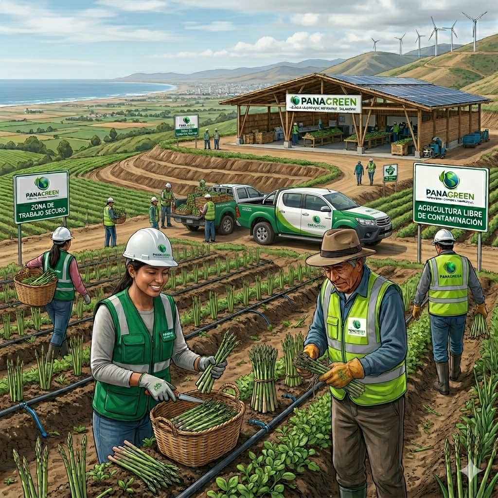

Monitoreo
AMBIENTAL
Contamos con el respaldo de profesionales con experiencia en entidades públicas y privadas.

Consultoría
AMBIENTAL
Soluciones sostenibles para proyectos de alto impacto ambiental.
¿Quiénes somos?
Somos PANAGREEN, una empresa especializada en consultoría ambiental y servicios técnicos. Brindamos soluciones responsables y sostenibles que cumplen con la normativa nacional e internacional, con el propósito de generar confianza y valor en nuestros clientes y aliados estratégicos. Contamos con un equipo multidisciplinario de profesionales con amplia experiencia en el sector público y privado, comprometidos con la excelencia y la innovación.
CONOCENOS




NUESTROS LOGROS
Estudios Ambientales Aprobados
Monitoreo Ambiental
Planes de Manejo de Residuos